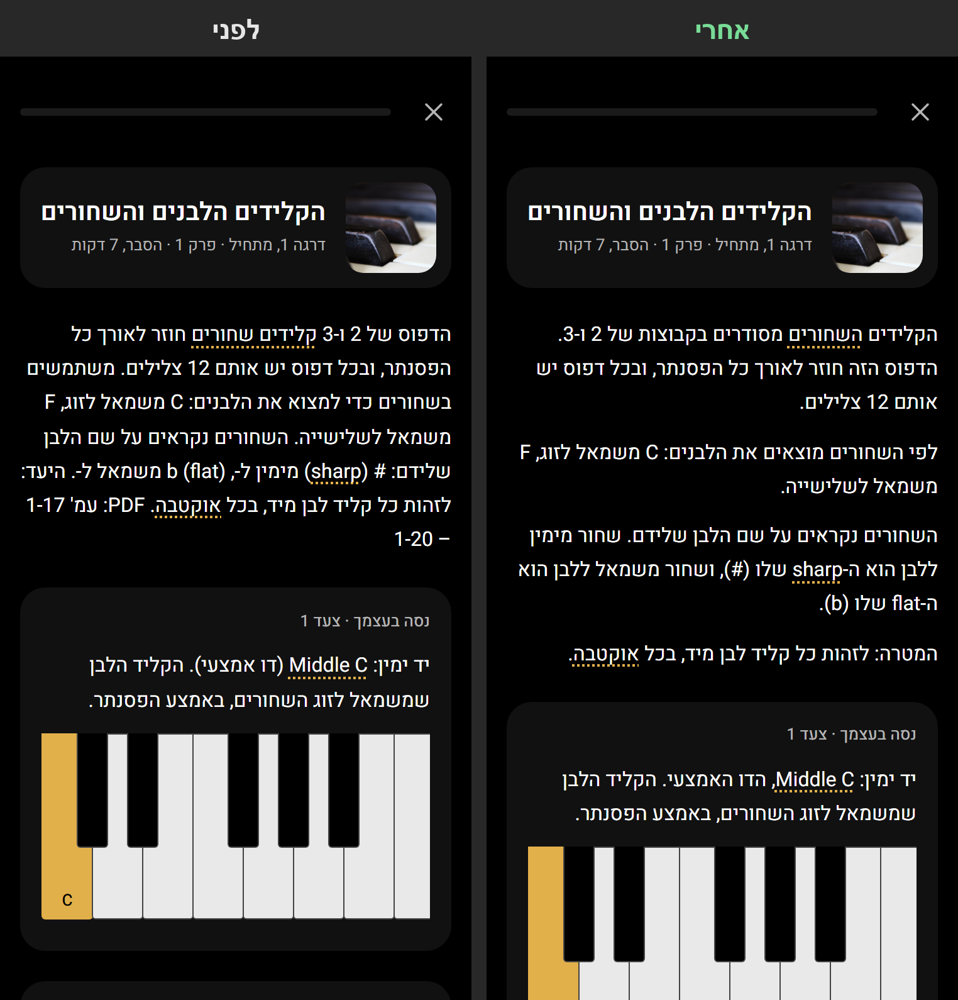
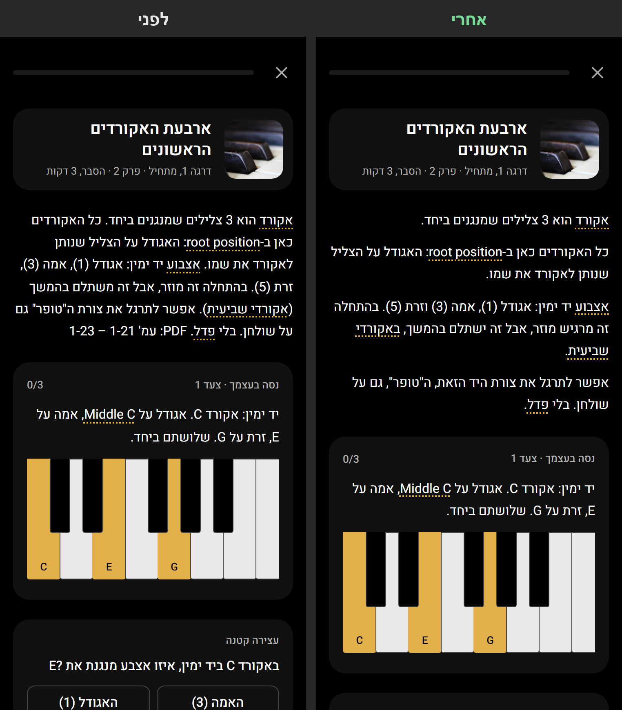
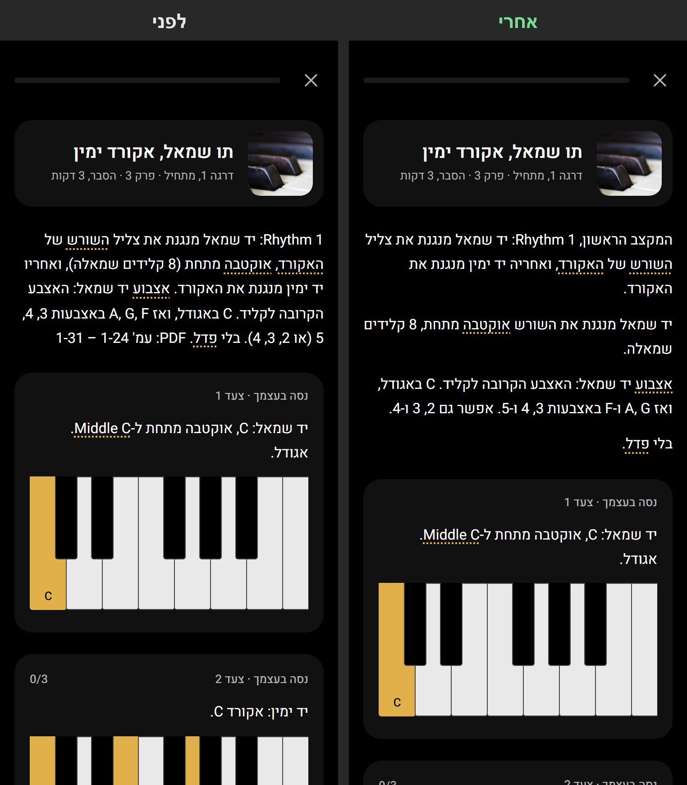
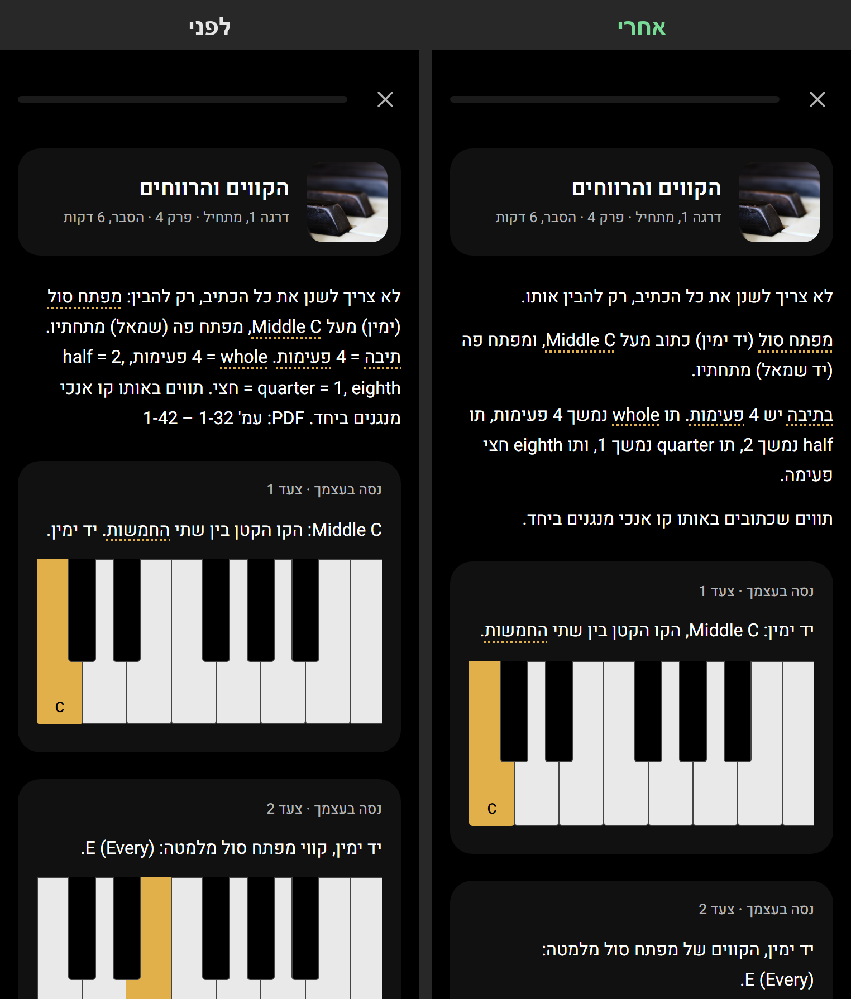
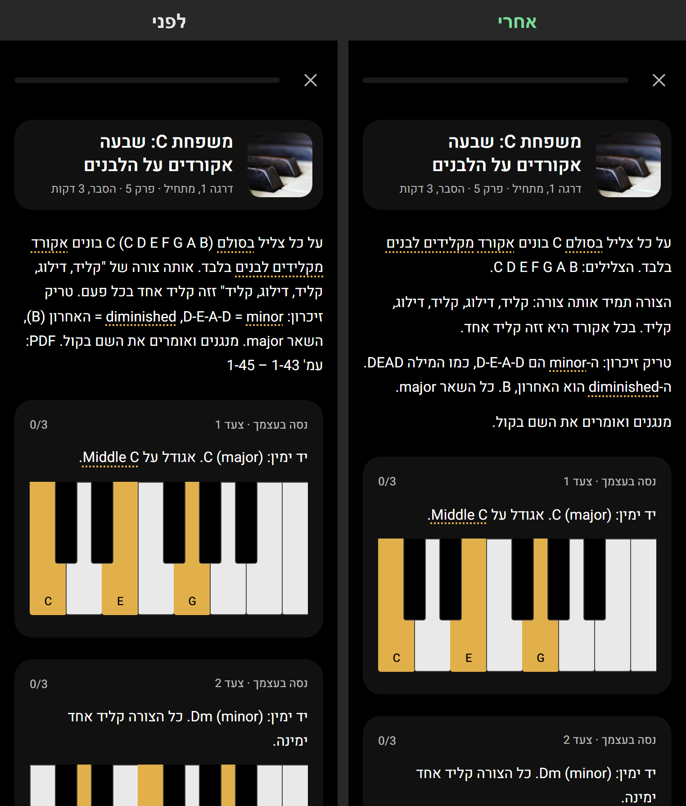
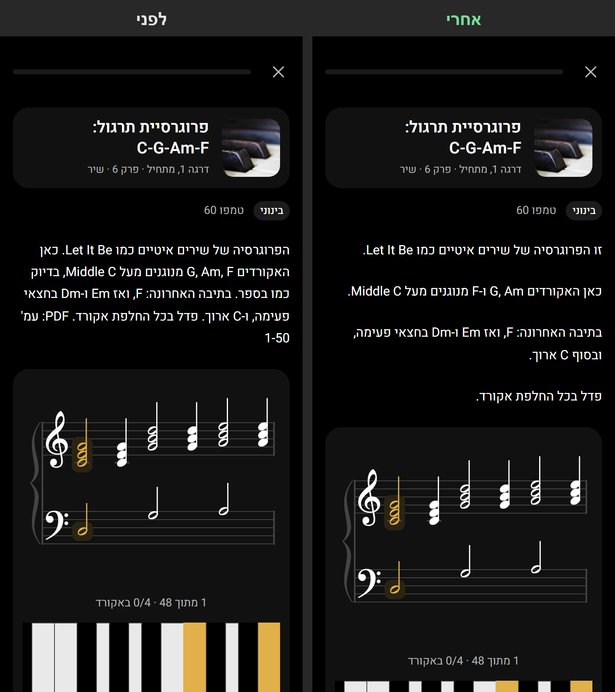

פרק הניסוי · ספר 1, פרקים 1–6
11 שיעורים שוכתבו באמת. אחרי מימין, לפני משמאל. אפשר להגדיל עם שתי אצבעות.
הקלידים הלבנים והשחורים
הפתיחה פורקה לארבע פסקאות. משפט שהיה קטוע ("מימין ל-, משמאל ל-") הושלם. "מצא" הפך ל"מוצאים".

ארבעת האקורדים הראשונים
חמש פסקאות במקום אחת. מספרי העמודים נמחקו.

תו שמאל, אקורד ימין
המקצב, השורש והאצבוע הופרדו. הסוגריים בצעדים הפכו לפסיק.

הקווים והרווחים
סימני = ליד אנגלית (שיצאו מבולגנים) הפכו למשפטים רגילים.

משפחת C
הצלילים, הצורה וטריק הזיכרון כל אחד בפסקה משלו.

פרוגרסיית תרגול C-G-Am-F
"בדיוק כמו בספר" ומספרי העמודים נמחקו.
